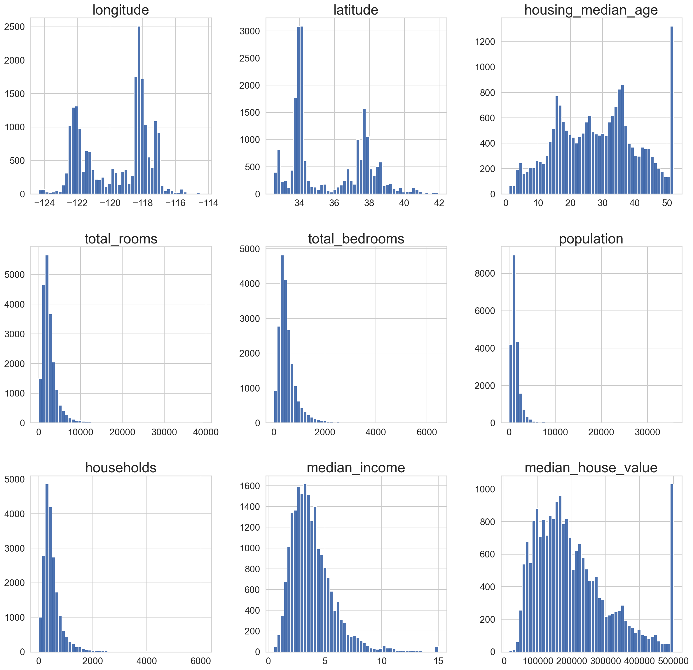

import os
import pandas as pd
import numpy as np This project is adapted from Aurelien Geron’s ML book (Github link) . The aim to predict median house values in Californian districts, given a number of features from these districts.
Main steps we will go through: 1. Formulate the problem 2. Get the data 3. Discover and visualize data / Data exploration to gain insight 4. Prep data for ML algorithm testing 5. Select model and train it 6. Fine-tuning the model
Step 1: Formulate the problem
Prediction of district’s median housing price given all other metrics. A supervised learning task is where we are given ‘labelled’ data for training purpose. Regression model to predict a continuous variable i.e. district median housing price. Given multiple features, this is a multi-class regression type problem. Univariate regression since a single output is estimated.
Step 2: Get the data
#----- PLOTTING PARAMS ----#
import matplotlib.pyplot as plt
from matplotlib.pyplot import cm
import seaborn as sns
sns.set(style="whitegrid")
sns.color_palette("husl")
%config InlineBackend.figure_format = 'retina'
%config InlineBackend.print_figure_kwargs={'facecolor' : "w"}
plot_params = {
'font.size' : 30,
'axes.titlesize' : 24,
'axes.labelsize' : 20,
'axes.labelweight' : 'bold',
'lines.linewidth' : 3,
'lines.markersize' : 10,
'xtick.labelsize' : 16,
'ytick.labelsize' : 16,
}
plt.rcParams.update(plot_params)#Load the dataset
housing = pd.read_csv('./data/housing.csv')housing.sample(7)| longitude | latitude | housing_median_age | total_rooms | total_bedrooms | population | households | median_income | median_house_value | ocean_proximity | |
|---|---|---|---|---|---|---|---|---|---|---|
| 10769 | -117.89 | 33.66 | 33.0 | 3595.0 | 785.0 | 1621.0 | 732.0 | 4.1372 | 265200.0 | <1H OCEAN |
| 4165 | -118.20 | 34.11 | 36.0 | 1441.0 | 534.0 | 1809.0 | 500.0 | 2.1793 | 185700.0 | <1H OCEAN |
| 3685 | -118.37 | 34.21 | 36.0 | 2080.0 | 455.0 | 1939.0 | 484.0 | 4.2875 | 176600.0 | <1H OCEAN |
| 8040 | -118.15 | 33.84 | 37.0 | 1508.0 | 252.0 | 635.0 | 241.0 | 3.7500 | 221300.0 | <1H OCEAN |
| 11836 | -120.98 | 39.08 | 20.0 | 4570.0 | 906.0 | 2125.0 | 815.0 | 3.0403 | 148000.0 | INLAND |
| 1525 | -122.07 | 37.89 | 28.0 | 3410.0 | 746.0 | 1428.0 | 670.0 | 4.3864 | 266800.0 | NEAR BAY |
| 18180 | -122.03 | 37.37 | 9.0 | 2966.0 | 770.0 | 1430.0 | 740.0 | 3.0047 | 256000.0 | <1H OCEAN |
Each row presents one district. Each of these districts has 10 attributes (features).
housing.info()<class 'pandas.core.frame.DataFrame'>
RangeIndex: 20640 entries, 0 to 20639
Data columns (total 10 columns):
# Column Non-Null Count Dtype
--- ------ -------------- -----
0 longitude 20640 non-null float64
1 latitude 20640 non-null float64
2 housing_median_age 20640 non-null float64
3 total_rooms 20640 non-null float64
4 total_bedrooms 20433 non-null float64
5 population 20640 non-null float64
6 households 20640 non-null float64
7 median_income 20640 non-null float64
8 median_house_value 20640 non-null float64
9 ocean_proximity 20640 non-null object
dtypes: float64(9), object(1)
memory usage: 1.6+ MBOne thing to notice in this dataset is the number of total_bedroom entries is different from other entries. This suggests there are some missing entries or null in the dataset.
#To show the null elements (if any in the total_bedroom entries)
housing[housing.total_bedrooms.isnull()]| longitude | latitude | housing_median_age | total_rooms | total_bedrooms | population | households | median_income | median_house_value | ocean_proximity | |
|---|---|---|---|---|---|---|---|---|---|---|
| 290 | -122.16 | 37.77 | 47.0 | 1256.0 | NaN | 570.0 | 218.0 | 4.3750 | 161900.0 | NEAR BAY |
| 341 | -122.17 | 37.75 | 38.0 | 992.0 | NaN | 732.0 | 259.0 | 1.6196 | 85100.0 | NEAR BAY |
| 538 | -122.28 | 37.78 | 29.0 | 5154.0 | NaN | 3741.0 | 1273.0 | 2.5762 | 173400.0 | NEAR BAY |
| 563 | -122.24 | 37.75 | 45.0 | 891.0 | NaN | 384.0 | 146.0 | 4.9489 | 247100.0 | NEAR BAY |
| 696 | -122.10 | 37.69 | 41.0 | 746.0 | NaN | 387.0 | 161.0 | 3.9063 | 178400.0 | NEAR BAY |
| ... | ... | ... | ... | ... | ... | ... | ... | ... | ... | ... |
| 20267 | -119.19 | 34.20 | 18.0 | 3620.0 | NaN | 3171.0 | 779.0 | 3.3409 | 220500.0 | NEAR OCEAN |
| 20268 | -119.18 | 34.19 | 19.0 | 2393.0 | NaN | 1938.0 | 762.0 | 1.6953 | 167400.0 | NEAR OCEAN |
| 20372 | -118.88 | 34.17 | 15.0 | 4260.0 | NaN | 1701.0 | 669.0 | 5.1033 | 410700.0 | <1H OCEAN |
| 20460 | -118.75 | 34.29 | 17.0 | 5512.0 | NaN | 2734.0 | 814.0 | 6.6073 | 258100.0 | <1H OCEAN |
| 20484 | -118.72 | 34.28 | 17.0 | 3051.0 | NaN | 1705.0 | 495.0 | 5.7376 | 218600.0 | <1H OCEAN |
207 rows × 10 columns
For categorical entries (here, ocean_proximity entries) we can find out the entries and their number using the value_counts(). We can do this for any entry we wish but makes more sense for categorical entries.
housing["ocean_proximity"].value_counts()<1H OCEAN 9136
INLAND 6551
NEAR OCEAN 2658
NEAR BAY 2290
ISLAND 5
Name: ocean_proximity, dtype: int64housing.describe().round(2)| longitude | latitude | housing_median_age | total_rooms | total_bedrooms | population | households | median_income | median_house_value | |
|---|---|---|---|---|---|---|---|---|---|
| count | 20640.00 | 20640.00 | 20640.00 | 20640.00 | 20433.00 | 20640.00 | 20640.00 | 20640.00 | 20640.00 |
| mean | -119.57 | 35.63 | 28.64 | 2635.76 | 537.87 | 1425.48 | 499.54 | 3.87 | 206855.82 |
| std | 2.00 | 2.14 | 12.59 | 2181.62 | 421.39 | 1132.46 | 382.33 | 1.90 | 115395.62 |
| min | -124.35 | 32.54 | 1.00 | 2.00 | 1.00 | 3.00 | 1.00 | 0.50 | 14999.00 |
| 25% | -121.80 | 33.93 | 18.00 | 1447.75 | 296.00 | 787.00 | 280.00 | 2.56 | 119600.00 |
| 50% | -118.49 | 34.26 | 29.00 | 2127.00 | 435.00 | 1166.00 | 409.00 | 3.53 | 179700.00 |
| 75% | -118.01 | 37.71 | 37.00 | 3148.00 | 647.00 | 1725.00 | 605.00 | 4.74 | 264725.00 |
| max | -114.31 | 41.95 | 52.00 | 39320.00 | 6445.00 | 35682.00 | 6082.00 | 15.00 | 500001.00 |
Describe is powerful subroutine since that allows us to check the stat summary of numerical attributes
The 25%-50%-75% entries for each column show corresponding percentiles. It indicates the value below which a given percentage of observations in a group of observations fall. For example, 25% of observation have median income below 2.56, 50% observations have median income below 3.53, and 75% observations have median income below 4.74. 25% –> 1st Quartile, 50% –> Median, 75% –> 3rd Quartile
housing.hist(bins=50,figsize=(20,20));
Few observations from the Histogram plots, again remember each row is an entry for an ENTIRE district:
NOTICE: From the dataset’s source disclaimer: The housing_median_value, housing_median_age, median_income_value are capped at an arbitrary value.
- From latitute and longitude plots there seems to be lots of district in four particular locations (34,37 – latitude) and (-120,-118 – longitude). We cannot comment on the exact location but only one on these pairs giving most data.
- We see a tighter distribution for total_rooms, total_bedrooms, and population but spread for house_value and an intresting spike at its end.
- Small spike at the end of median_income plot suggests presence of small group of affluent families but interestingly that spike does not correlate with the spike in the house_value (More high-end property entries than more “rich” people in a district)
Finally, the dataset is tail-heavy that is they extend further to the right from the median which might make modeling using some ML algorithm a bit chanellenging. Few entries should be scaled such that the distribution is more normal.
Create a test-set
This ensures that this is the data on which training, testing occurs and we do not try overfitting to account for all the variance in the data. Typical 20% of data-points are randomly chosen.
def split_train_test(data,test_ratio):
shuffled_indices=np.random.permutation(len(data))
test_set_size=int(len(data)*test_ratio)
test_indices=shuffled_indices[:test_set_size]
train_indices=shuffled_indices[test_set_size:]
return(data.iloc[train_indices],data.iloc[test_indices])#To ensure we get similar results at each run -- if not initiated every successive will give more random
#shuffled indices risking the possibility of the algo seeing the entire dataset!
np.random.seed(42)
#Random seed set to 42 for no particular reason
#but just cause its the answer to the Ultimate Question of Life, The Universe, and Everything
train_set, test_set = split_train_test(housing, 0.2)
print(len(train_set), "train +", len(test_set), "test")16512 train + 4128 testBetter way is to have an instance identifier (like id) for each entry to distingusih each entry and see if its sampled or not.
from zlib import crc32
def test_set_check(identifier, test_ratio):
return crc32(np.int64(identifier)) & 0xffffffff < test_ratio * 2**32
def split_train_test_by_id(data, test_ratio, id_column):
ids = data[id_column]
in_test_set = ids.apply(lambda id_: test_set_check(id_, test_ratio))
return data.loc[~in_test_set], data.loc[in_test_set]The dataset currently doesnt have inherent id. We could use the row index as id. Or we could use an ad-hoc unique identifier as an interim id.
#HOUSING DATA WITH ID as ROW INDEX
housing_with_id = housing.reset_index() # adds an `index` column
train_set, test_set = split_train_test_by_id(housing_with_id, 0.2, "index")
#HOUSING DATA WITH ID AS COMBO OF LAT AND LONG.
housing_with_id["id"] = housing["longitude"] * 1000 + housing["latitude"]
train_set, test_set = split_train_test_by_id(housing_with_id, 0.2, "id")
#SCIKIT-LEARN IMPLEMENTATION
#from sklearn.model_selection import train_test_split
#train_set, test_set = train_test_split(housing, test_size=0.2, random_state=42)test_set.head()| index | longitude | latitude | housing_median_age | total_rooms | total_bedrooms | population | households | median_income | median_house_value | ocean_proximity | id | |
|---|---|---|---|---|---|---|---|---|---|---|---|---|
| 59 | 59 | -122.29 | 37.82 | 2.0 | 158.0 | 43.0 | 94.0 | 57.0 | 2.5625 | 60000.0 | NEAR BAY | -122252.18 |
| 60 | 60 | -122.29 | 37.83 | 52.0 | 1121.0 | 211.0 | 554.0 | 187.0 | 3.3929 | 75700.0 | NEAR BAY | -122252.17 |
| 61 | 61 | -122.29 | 37.82 | 49.0 | 135.0 | 29.0 | 86.0 | 23.0 | 6.1183 | 75000.0 | NEAR BAY | -122252.18 |
| 62 | 62 | -122.29 | 37.81 | 50.0 | 760.0 | 190.0 | 377.0 | 122.0 | 0.9011 | 86100.0 | NEAR BAY | -122252.19 |
| 67 | 67 | -122.29 | 37.80 | 52.0 | 1027.0 | 244.0 | 492.0 | 147.0 | 2.6094 | 81300.0 | NEAR BAY | -122252.20 |
However the sampling we have considered here or the one used in Scikit-learn is random sampling by default. This is fine for large dataset however for smaller dataset it is utmost important that the sampled data is representative of the main population data or else we will introduce sampling bias.
This is an important bias that could be introduced without prior knowledge and could be overlooked at multiple occassion leading to wrong conclusions. To ensure the sampled dataset is representative of the population set we use stratified sampling (pseudo-random sampling). To make the stratified sampling tractable we first divide the main data into multiple ‘stratas’ based on an variable which we feel is an feature that should be replicated in our test set. The sample is divided into strata and right number of instances are chosen from each strata. We must not have too many stratas and the each strate must have appropriate number of instances.
For the case of property pricing in the district, median_income variable is chosen as the variable whose distribution in the main population and the randomly chosen test sample is same. This attribute is an important attribute to predict the final median housing price. So we can think of converting the continuous variable of median_variable into categorical variable – that is stratas.
Stratified sampling using median income
housing["median_income"].hist()From the median_income histogram it is seen that most of the entries are clustered in the range of 2-5 (arbitrary units). We can then use this information to make stratas around these instances. Cut routine in the pandas is used for this purpose. This function is also useful for going from a continuous variable to a categorical variable. For example, cut could convert ages to groups of age ranges.
housing["income_cat"] = pd.cut(housing["median_income"],
bins=[0., 1.5, 3.0, 4.5, 6., np.inf], #bins around 2-5 income bracket
labels=[1, 2, 3, 4, 5])
housing["income_cat"].value_counts()3 7236
2 6581
4 3639
5 2362
1 822
Name: income_cat, dtype: int64housing["income_cat"].hist()Now with the population categorised into various median income groups we can use stratified sampling routine (as implemented in scikit-learn) to make our test-set. As an additional proof let’s compare this to a randomly sampled test_case. We will redo the random sampling we did prviously but with the new population with categorised median_income.
#Stratified sampling from scikit-learn
from sklearn.model_selection import StratifiedShuffleSplit, train_test_split
split = StratifiedShuffleSplit(n_splits=1, test_size=0.2, random_state=42)
for train_index, test_index in split.split(housing, housing["income_cat"]):
strat_train_set = housing.loc[train_index]
strat_test_set = housing.loc[test_index]
#Using random sampling
rand_train_set, rand_test_set = train_test_split(housing, test_size=0.2, random_state=42)Let’s check the distribution of the income_cat variable in the strat_test, random_test, and the main sample.
housing["income_cat"].value_counts()/len(housing["income_cat"])3 0.350581
2 0.318847
4 0.176308
5 0.114438
1 0.039826
Name: income_cat, dtype: float64rand_test_set["income_cat"].value_counts()/len(rand_test_set["income_cat"])3 0.358527
2 0.324370
4 0.167393
5 0.109496
1 0.040213
Name: income_cat, dtype: float64strat_test_set["income_cat"].value_counts()/len(strat_test_set["income_cat"])3 0.350533
2 0.318798
4 0.176357
5 0.114583
1 0.039729
Name: income_cat, dtype: float64def income_cat_proportions(data):
return data["income_cat"].value_counts() / len(data)
compare_props = pd.DataFrame({
"Overall": income_cat_proportions(housing),
"Stratified": income_cat_proportions(strat_test_set),
"Random": income_cat_proportions(rand_test_set),
}).sort_index()
compare_props["Rand. %error"] = 100 * compare_props["Random"] / compare_props["Overall"] - 100
compare_props["Strat. %error"] = 100 * compare_props["Stratified"] / compare_props["Overall"] - 100compare_props| Overall | Stratified | Random | Rand. %error | Strat. %error | |
|---|---|---|---|---|---|
| 1 | 0.039826 | 0.039729 | 0.040213 | 0.973236 | -0.243309 |
| 2 | 0.318847 | 0.318798 | 0.324370 | 1.732260 | -0.015195 |
| 3 | 0.350581 | 0.350533 | 0.358527 | 2.266446 | -0.013820 |
| 4 | 0.176308 | 0.176357 | 0.167393 | -5.056334 | 0.027480 |
| 5 | 0.114438 | 0.114583 | 0.109496 | -4.318374 | 0.127011 |
Now, we can remove the income_cat column
for set_ in (strat_train_set, strat_test_set):
set_.drop("income_cat", axis=1, inplace=True)Preliminary visualization of the data
Let’s now dive a bit deeper into the data visualization and analysis. Before we do so, copy the strat_train_set as that would be the data-set we would be playing around and make sure the main data-set is not touched.
housing=strat_train_set.copy()
housing.info()<class 'pandas.core.frame.DataFrame'>
Int64Index: 16512 entries, 17606 to 15775
Data columns (total 10 columns):
# Column Non-Null Count Dtype
--- ------ -------------- -----
0 longitude 16512 non-null float64
1 latitude 16512 non-null float64
2 housing_median_age 16512 non-null float64
3 total_rooms 16512 non-null float64
4 total_bedrooms 16354 non-null float64
5 population 16512 non-null float64
6 households 16512 non-null float64
7 median_income 16512 non-null float64
8 median_house_value 16512 non-null float64
9 ocean_proximity 16512 non-null object
dtypes: float64(9), object(1)
memory usage: 1.4+ MBGeographical visualization
Let’s now plot the data entries in the housing data as per the latitude and longitude.
housing.plot(kind='scatter',x='longitude',y='latitude');*c* argument looks like a single numeric RGB or RGBA sequence, which should be avoided as value-mapping will have precedence in case its length matches with *x* & *y*. Please use the *color* keyword-argument or provide a 2D array with a single row if you intend to specify the same RGB or RGBA value for all points.This look’s like California however, we cannot infer anything more out of this. Let’s play around a little bit more…
- Playing with the alpha value in the plotting routine allows us to see the frequency of THAT datapoint in the plot
housing.plot(kind='scatter',x='longitude',y='latitude',alpha=0.1);*c* argument looks like a single numeric RGB or RGBA sequence, which should be avoided as value-mapping will have precedence in case its length matches with *x* & *y*. Please use the *color* keyword-argument or provide a 2D array with a single row if you intend to specify the same RGB or RGBA value for all points.From here, we can see the high density of listings in the Bay area and LA also around Sacramento and Fresco.
housing.plot(kind="scatter", x="longitude", y="latitude", alpha=0.4,
s=housing["population"]/100, label="population", figsize=(8,5),
c="median_house_value", cmap=plt.get_cmap("jet"), colorbar=True,
sharex=False)
plt.legend()This is more interesting! We have now plotted the data with more information. Each data-point has two additional set of info apart of frequency of occurence. First being the color of the point is the median_house_value entry (option c). The radius of the data-point is the population of that district (option s). It can be seen that the housing prices are very much related to the location. The ones closer to the bay area are more expensive but need not be densely populated.
Looking for simple correlations
In addition to looking at the plot of housing price, we can check for simpler correaltions. Pearson’s correlation matrix is something which is in-built in pandas and can be directly used. It checks for correlation between every pair of feature provided in the data-set. It estimates the covariance of the two features and estimates whether the correlation is inverse, direct, or none.
corr_matrix=housing.corr()
corr_matrix.style.background_gradient(cmap='coolwarm').set_precision(2)| longitude | latitude | housing_median_age | total_rooms | total_bedrooms | population | households | median_income | median_house_value | |
|---|---|---|---|---|---|---|---|---|---|
| longitude | 1.00 | -0.92 | -0.11 | 0.05 | 0.08 | 0.11 | 0.06 | -0.02 | -0.05 |
| latitude | -0.92 | 1.00 | 0.01 | -0.04 | -0.07 | -0.12 | -0.08 | -0.08 | -0.14 |
| housing_median_age | -0.11 | 0.01 | 1.00 | -0.36 | -0.33 | -0.30 | -0.31 | -0.11 | 0.11 |
| total_rooms | 0.05 | -0.04 | -0.36 | 1.00 | 0.93 | 0.86 | 0.92 | 0.20 | 0.14 |
| total_bedrooms | 0.08 | -0.07 | -0.33 | 0.93 | 1.00 | 0.88 | 0.98 | -0.01 | 0.05 |
| population | 0.11 | -0.12 | -0.30 | 0.86 | 0.88 | 1.00 | 0.90 | 0.00 | -0.03 |
| households | 0.06 | -0.08 | -0.31 | 0.92 | 0.98 | 0.90 | 1.00 | 0.01 | 0.06 |
| median_income | -0.02 | -0.08 | -0.11 | 0.20 | -0.01 | 0.00 | 0.01 | 1.00 | 0.69 |
| median_house_value | -0.05 | -0.14 | 0.11 | 0.14 | 0.05 | -0.03 | 0.06 | 0.69 | 1.00 |
corr_matrix['median_house_value'].sort_values(ascending=True)latitude -0.142724
longitude -0.047432
population -0.026920
total_bedrooms 0.047689
households 0.064506
housing_median_age 0.114110
total_rooms 0.135097
median_income 0.687160
median_house_value 1.000000
Name: median_house_value, dtype: float64The correlation matrix suggests the amount of correlation between a pair of variables. When close to 1 it means a strong +ve correlation whereas, -1 means an inverse correlation. Looking at the correlation between median_house_values and other variables, we can see that there’s some correlation with median_income (0.68 – so +ve), and with the latitude (-0.14 – so an inverse relation).
Another to check this relation is to plot scatter plots for each pair of variables in the dataset. Below we plot this for few potential/interesting variables
# from pandas.tools.plotting import scatter_matrix # For older versions of Pandas
from pandas.plotting import scatter_matrix
attributes = ["median_house_value", "median_income", "total_rooms",
"housing_median_age"]
scatter_axes = scatter_matrix(housing[attributes], figsize=(12, 8));
#y labels
[plt.setp(item.yaxis.get_label(), 'size', 10) for item in scatter_axes.ravel()];
#x labels
[plt.setp(item.xaxis.get_label(), 'size', 10) for item in scatter_axes.ravel()];The diagonal entries show the histogram for each variable. We saw this previously for some variables. The most promising variable from this analysis seems to be the median_income.
housing.plot(kind="scatter", x="median_income", y="median_house_value",
alpha=0.1);*c* argument looks like a single numeric RGB or RGBA sequence, which should be avoided as value-mapping will have precedence in case its length matches with *x* & *y*. Please use the *color* keyword-argument or provide a 2D array with a single row if you intend to specify the same RGB or RGBA value for all points.Plotting it shows the stronger correlation with the target variable i.e. median_house_value however we can see horizontal lines (especially at USD 500k, 450k 350k) these could be due to some stratifying done in the dataset implicitly. It would be better to remove those to ensure our model does not spuriously fit for those since they are some of the quirks in the data.
Experimenting with attributes
Before we began proposing models for the data. We can play around with the variables and try different combinations of them to see if we get better trends. Let’s look at a few. First, the total_room and/or total_bedroom variable could be changed to average_bedroom_per_house to better for bedrooms rather than looking for total bedroom in that district we would be looking at avg_bedroom per district and similarly we would do it for rooms.
#Average bedroom per house-holds in the district
housing['avg_bedroom']=housing['total_bedrooms']/housing['households']
#Average room per house-holds in the district
housing['avg_room']=housing['total_rooms']/housing['households']
#Average bedrooms per rooms in a given district
housing['bedroom_per_room']=housing['total_bedrooms']/housing['total_rooms']
#Average population per household in a given district
housing['population_per_household']=housing['population']/housing['households']
#Average room per population in a given district
housing['room_per_popoulation']=housing['total_rooms']/housing['population']
#Average room per population in a given district
housing['room_per_popoulation']=housing['total_rooms']/housing['population']#Making the correlation matrix again
corr_matrix=housing.corr()
corr_matrix.style.background_gradient(cmap='coolwarm').set_precision(2)| longitude | latitude | housing_median_age | total_rooms | total_bedrooms | population | households | median_income | median_house_value | avg_bedroom | avg_room | bedroom_per_room | population_per_household | room_per_popoulation | |
|---|---|---|---|---|---|---|---|---|---|---|---|---|---|---|
| longitude | 1.00 | -0.92 | -0.11 | 0.05 | 0.08 | 0.11 | 0.06 | -0.02 | -0.05 | 0.01 | -0.03 | 0.10 | -0.00 | -0.07 |
| latitude | -0.92 | 1.00 | 0.01 | -0.04 | -0.07 | -0.12 | -0.08 | -0.08 | -0.14 | 0.07 | 0.11 | -0.12 | 0.01 | 0.14 |
| housing_median_age | -0.11 | 0.01 | 1.00 | -0.36 | -0.33 | -0.30 | -0.31 | -0.11 | 0.11 | -0.08 | -0.15 | 0.14 | 0.02 | -0.10 |
| total_rooms | 0.05 | -0.04 | -0.36 | 1.00 | 0.93 | 0.86 | 0.92 | 0.20 | 0.14 | 0.03 | 0.13 | -0.19 | -0.02 | 0.12 |
| total_bedrooms | 0.08 | -0.07 | -0.33 | 0.93 | 1.00 | 0.88 | 0.98 | -0.01 | 0.05 | 0.04 | 0.00 | 0.09 | -0.03 | 0.05 |
| population | 0.11 | -0.12 | -0.30 | 0.86 | 0.88 | 1.00 | 0.90 | 0.00 | -0.03 | -0.07 | -0.07 | 0.04 | 0.08 | -0.14 |
| households | 0.06 | -0.08 | -0.31 | 0.92 | 0.98 | 0.90 | 1.00 | 0.01 | 0.06 | -0.06 | -0.08 | 0.07 | -0.03 | -0.04 |
| median_income | -0.02 | -0.08 | -0.11 | 0.20 | -0.01 | 0.00 | 0.01 | 1.00 | 0.69 | -0.06 | 0.31 | -0.62 | 0.02 | 0.23 |
| median_house_value | -0.05 | -0.14 | 0.11 | 0.14 | 0.05 | -0.03 | 0.06 | 0.69 | 1.00 | -0.04 | 0.15 | -0.26 | -0.02 | 0.20 |
| avg_bedroom | 0.01 | 0.07 | -0.08 | 0.03 | 0.04 | -0.07 | -0.06 | -0.06 | -0.04 | 1.00 | 0.86 | 0.05 | -0.01 | 0.84 |
| avg_room | -0.03 | 0.11 | -0.15 | 0.13 | 0.00 | -0.07 | -0.08 | 0.31 | 0.15 | 0.86 | 1.00 | -0.40 | -0.01 | 0.90 |
| bedroom_per_room | 0.10 | -0.12 | 0.14 | -0.19 | 0.09 | 0.04 | 0.07 | -0.62 | -0.26 | 0.05 | -0.40 | 1.00 | 0.00 | -0.26 |
| population_per_household | -0.00 | 0.01 | 0.02 | -0.02 | -0.03 | 0.08 | -0.03 | 0.02 | -0.02 | -0.01 | -0.01 | 0.00 | 1.00 | -0.05 |
| room_per_popoulation | -0.07 | 0.14 | -0.10 | 0.12 | 0.05 | -0.14 | -0.04 | 0.23 | 0.20 | 0.84 | 0.90 | -0.26 | -0.05 | 1.00 |
corr_matrix['median_house_value'].sort_values(ascending=True)bedroom_per_room -0.259984
latitude -0.142724
longitude -0.047432
avg_bedroom -0.043343
population -0.026920
population_per_household -0.021985
total_bedrooms 0.047689
households 0.064506
housing_median_age 0.114110
total_rooms 0.135097
avg_room 0.146285
room_per_popoulation 0.199429
median_income 0.687160
median_house_value 1.000000
Name: median_house_value, dtype: float64This is interesting! We see that bedroom_per_room is another potential descriptor with negative corelation moreover we get room_per_population and avg_room to be decent new descriptors for the median_house_value. Not bad for a simple math manipulation to better represent the data. This is a crucial step and where domain knowledge and intuition would come handy.
Data cleaning and prepping
- Separate the predictors and the target values
- Write functions to conduct various data transformations ensuring consistency and ease
- Make sure the data is devoid of any NaN values since that would raise warning and errors. We have three strategies we can implement here:
- Get rid of those points (districts) entirely
- Get rid of whole attribute
- Set missing values to either zero or one of the averages (mean, median, or mode)
In our case, total bedrooms had some missing values.
# Option a:
housing.dropna(subset=["total_bedrooms"])
# Option b:
housing.drop("total_bedrooms", axis=1)
# Option c:
median = housing["total_bedrooms"].median()
housing["total_bedrooms"].fillna(median, inplace=True) # option 3Before we do any of this let’s first separate the predictor and target_values
housing = strat_train_set.drop("median_house_value", axis=1) # drop labels for training set
housing_labels = strat_train_set["median_house_value"].copy()#Checking the NULL enties in the dataset
sample_incomplete_rows = housing[housing.isnull().any(axis=1)].head()
sample_incomplete_rows| longitude | latitude | housing_median_age | total_rooms | total_bedrooms | population | households | median_income | ocean_proximity | |
|---|---|---|---|---|---|---|---|---|---|
| 4629 | -118.30 | 34.07 | 18.0 | 3759.0 | NaN | 3296.0 | 1462.0 | 2.2708 | <1H OCEAN |
| 6068 | -117.86 | 34.01 | 16.0 | 4632.0 | NaN | 3038.0 | 727.0 | 5.1762 | <1H OCEAN |
| 17923 | -121.97 | 37.35 | 30.0 | 1955.0 | NaN | 999.0 | 386.0 | 4.6328 | <1H OCEAN |
| 13656 | -117.30 | 34.05 | 6.0 | 2155.0 | NaN | 1039.0 | 391.0 | 1.6675 | INLAND |
| 19252 | -122.79 | 38.48 | 7.0 | 6837.0 | NaN | 3468.0 | 1405.0 | 3.1662 | <1H OCEAN |
sample_incomplete_rows.dropna(subset=["total_bedrooms"]) # option 1| longitude | latitude | housing_median_age | total_rooms | total_bedrooms | population | households | median_income | ocean_proximity |
|---|
sample_incomplete_rows.drop("total_bedrooms", axis=1) #option 2| longitude | latitude | housing_median_age | total_rooms | population | households | median_income | ocean_proximity | |
|---|---|---|---|---|---|---|---|---|
| 4629 | -118.30 | 34.07 | 18.0 | 3759.0 | 3296.0 | 1462.0 | 2.2708 | <1H OCEAN |
| 6068 | -117.86 | 34.01 | 16.0 | 4632.0 | 3038.0 | 727.0 | 5.1762 | <1H OCEAN |
| 17923 | -121.97 | 37.35 | 30.0 | 1955.0 | 999.0 | 386.0 | 4.6328 | <1H OCEAN |
| 13656 | -117.30 | 34.05 | 6.0 | 2155.0 | 1039.0 | 391.0 | 1.6675 | INLAND |
| 19252 | -122.79 | 38.48 | 7.0 | 6837.0 | 3468.0 | 1405.0 | 3.1662 | <1H OCEAN |
median = housing["total_bedrooms"].median()
sample_incomplete_rows["total_bedrooms"].fillna(median, inplace=True) # option 3
sample_incomplete_rows| longitude | latitude | housing_median_age | total_rooms | total_bedrooms | population | households | median_income | ocean_proximity | |
|---|---|---|---|---|---|---|---|---|---|
| 4629 | -118.30 | 34.07 | 18.0 | 3759.0 | 433.0 | 3296.0 | 1462.0 | 2.2708 | <1H OCEAN |
| 6068 | -117.86 | 34.01 | 16.0 | 4632.0 | 433.0 | 3038.0 | 727.0 | 5.1762 | <1H OCEAN |
| 17923 | -121.97 | 37.35 | 30.0 | 1955.0 | 433.0 | 999.0 | 386.0 | 4.6328 | <1H OCEAN |
| 13656 | -117.30 | 34.05 | 6.0 | 2155.0 | 433.0 | 1039.0 | 391.0 | 1.6675 | INLAND |
| 19252 | -122.79 | 38.48 | 7.0 | 6837.0 | 433.0 | 3468.0 | 1405.0 | 3.1662 | <1H OCEAN |
Scikit-learn imputer class
This is a handy class to take of missing values. First, we create an instance of that class with specifying what is to be replaced and what strategy is used. Before doing so, we need to make srue the entire data-set has ONLY numerical entries and Imputer will evaluate the given average for all the dataset and store it in the statistics_ instance
What the imputer will do is, 1. Evaluate an specified type of average. 2. For a given numerical data-set look for NaN or Null entires in a given attribute and replace it with the computed avearge for that attribute
try:
from sklearn.impute import SimpleImputer # Scikit-Learn 0.20+
except ImportError:
from sklearn.preprocessing import Imputer as SimpleImputer
imputer = SimpleImputer(strategy="median") #We define the strategy here
housing_num = housing.drop('ocean_proximity', axis=1)
# alternatively: housing_num = housing.select_dtypes(include=[np.number])imputer.fit(housing_num)SimpleImputer(strategy='median')imputer.statistics_array([-118.51 , 34.26 , 29. , 2119.5 , 433. , 1164. ,
408. , 3.5409])housing_num.median().valuesarray([-118.51 , 34.26 , 29. , 2119.5 , 433. , 1164. ,
408. , 3.5409])We can now use this as a training variables set for our model
X = imputer.transform(housing_num)We convert the Pandas dataframe entries to a numpy array which is transformed with appropriately replacing the missing entries with median.
print(type(X), type(housing_num))<class 'numpy.ndarray'> <class 'pandas.core.frame.DataFrame'>print(np.shape(X), housing_num.shape)
'''
If we need the data-frame back
housing_tr = pd.DataFrame(X, columns=housing_num.columns,
index=housing.index)
'''(16512, 8) (16512, 8)'\nIf we need the data-frame back\nhousing_tr = pd.DataFrame(X, columns=housing_num.columns,\n index=housing.index)\n'Handling Text and Categorical Attribute
Now let’s preprocess the categorical input feature, ocean_proximity:
housing_cat = housing[['ocean_proximity']]
type(housing_cat)pandas.core.frame.DataFrameConverting the categorical entries to integers
try:
from sklearn.preprocessing import OrdinalEncoder
except ImportError:
from future_encoders import OrdinalEncoder # Scikit-Learn < 0.20
ordinal_encoder = OrdinalEncoder()
housing_cat_encoded = ordinal_encoder.fit_transform(housing_cat)
housing_cat_encoded[:10]array([[0.],
[0.],
[4.],
[1.],
[0.],
[1.],
[0.],
[1.],
[0.],
[0.]])housing["ocean_proximity"].value_counts()<1H OCEAN 7276
INLAND 5263
NEAR OCEAN 2124
NEAR BAY 1847
ISLAND 2
Name: ocean_proximity, dtype: int64Now, housing_cat_encoded has converted the categorical entries to purely numerical values for each category
ordinal_encoder.categories_[array(['<1H OCEAN', 'INLAND', 'ISLAND', 'NEAR BAY', 'NEAR OCEAN'],
dtype=object)]Now, this is helpful with the string categories getting converted to numerical categories. However, there is still an small issue. The categorical numbering may introduce some bias in the final model. ML algorithms will assume that two nearby values are more similar than two distant values.
In the above case, ‘<1H OCEAN’ and ‘INLAND’have category values as 0 and 1 however’<1H OCEAN’ is more closer to ‘NEAR OCEAN’ with category value 4.
To fix this issue, one solution is to create one binary attribute per category. This is called One-hot encoding as ONLY one of the attribute in the vector is 1 (hot) and others are 0 (cold).
Scikit-learn provides a OneHotEncoder encoder to convert integer categorical values to one-hot vectors.
try:
from sklearn.preprocessing import OrdinalEncoder # just to raise an ImportError if Scikit-Learn < 0.20
from sklearn.preprocessing import OneHotEncoder
except ImportError:
from future_encoders import OneHotEncoder # Scikit-Learn < 0.20
cat_encoder = OneHotEncoder()
#1-Hot encoded vector for the housing training data-set
housing_cat_1hot = cat_encoder.fit_transform(housing_cat)
type(housing_cat_1hot)scipy.sparse.csr.csr_matrixA sparse array is declared in this case which has the position of the non-zero value and not necessarily the entire numpy matrix. This is helpful in the cases where there are too many categories and also many datapoints. For examples, if we have 4 categories and 1000 datapoints the final one-hot matrix would be 1000x4 size. Most of that would be full of 0s, with only one 1 per row for a particular category.
The housing_cat_1hot can be converted to numpy array by using the housing_cat_1hot.toarray()
Alternatively, you can set sparse=False when creating the OneHotEncoder
cat_encoder.categories_[array(['<1H OCEAN', 'INLAND', 'ISLAND', 'NEAR BAY', 'NEAR OCEAN'],
dtype=object)]Let’s create a custom transformer to add extra attributes:
housing.columnsIndex(['longitude', 'latitude', 'housing_median_age', 'total_rooms',
'total_bedrooms', 'population', 'households', 'median_income',
'ocean_proximity'],
dtype='object')from sklearn.base import BaseEstimator, TransformerMixin
# get the right column indices: safer than hard-coding indices
rooms_ix, bedrooms_ix, population_ix, household_ix = [
list(housing.columns).index(col) for col in ("total_rooms", "total_bedrooms", "population", "households")]
#Here we convert the housing.columns to list and
#then find the index for the entry which matches the string in the loop
class CombinedAttributesAdder(BaseEstimator, TransformerMixin):
def __init__(self, add_bedrooms_per_room = True): # no *args or **kwargs
self.add_bedrooms_per_room = add_bedrooms_per_room
def fit(self, X, y=None):
return self # nothing else to do
def transform(self, X, y=None):
rooms_per_household = X[:, rooms_ix] / X[:, household_ix]
population_per_household = X[:, population_ix] / X[:, household_ix]
if self.add_bedrooms_per_room:
bedrooms_per_room = X[:, bedrooms_ix] / X[:, rooms_ix]
return np.c_[X, rooms_per_household, population_per_household,
bedrooms_per_room]
else:
return np.c_[X, rooms_per_household, population_per_household]
attr_adder = CombinedAttributesAdder(add_bedrooms_per_room=True)
housing_extra_attribs = attr_adder.transform(housing.values)From the above class, there’s only one hyperparameter in the class. add_bedrooms_per_room is the only option and is set True by default. Let’s check the new feature space by converting it to a Pandas Dataframe
housing_extra_attribs = pd.DataFrame(
housing_extra_attribs,
columns=list(housing.columns)+["bedrooms_per_room","rooms_per_household", "population_per_household"],
index=housing.index)
housing_extra_attribs.head()| longitude | latitude | housing_median_age | total_rooms | total_bedrooms | population | households | median_income | ocean_proximity | bedrooms_per_room | rooms_per_household | population_per_household | |
|---|---|---|---|---|---|---|---|---|---|---|---|---|
| 17606 | -121.89 | 37.29 | 38.0 | 1568.0 | 351.0 | 710.0 | 339.0 | 2.7042 | <1H OCEAN | 4.625369 | 2.094395 | 0.223852 |
| 18632 | -121.93 | 37.05 | 14.0 | 679.0 | 108.0 | 306.0 | 113.0 | 6.4214 | <1H OCEAN | 6.00885 | 2.707965 | 0.159057 |
| 14650 | -117.2 | 32.77 | 31.0 | 1952.0 | 471.0 | 936.0 | 462.0 | 2.8621 | NEAR OCEAN | 4.225108 | 2.025974 | 0.241291 |
| 3230 | -119.61 | 36.31 | 25.0 | 1847.0 | 371.0 | 1460.0 | 353.0 | 1.8839 | INLAND | 5.232295 | 4.135977 | 0.200866 |
| 3555 | -118.59 | 34.23 | 17.0 | 6592.0 | 1525.0 | 4459.0 | 1463.0 | 3.0347 | <1H OCEAN | 4.50581 | 3.047847 | 0.231341 |
Feature scaling
Feaature scaling is an important transformation needed to be applied to the data. With some exceptions, ML algorithms dont perform well when the input numerical entries have very different scales. Eg: One variable has range 0-1 but other variable has range 1-1000. This is the case in our data-base where the total number of rooms range from 6 to 39,320 while the objective variable i.e. median income only ranges from 0-15. Two common ways of scaling:
Min-max scaling (also called Normalization) Values are shifted such that they are normalized. They are rescaled in the range of 0-1. We do this by subtracting the min value and dividing by the range in the data \[\begin{equation} x_{i} = \frac{X_{i}-min}{max-min} \end{equation}\]
Standardization This is when the mean of the dataset is subtracted from each entry so that the data has mean as 0 and then divided by the standard deviation so that the resulting distribution has a unit variance. Unlike min-max scaling, standardization does not bound to a particular range like 0-1. However, standardisation is much less affected by outliers. If a particular values is extremely high or low that could affect the other inputs in the case of min-max scaling. However that effect is reduced in the case of standardization given it does not directly account for the range in the scaling but the mean and variance. \[\begin{equation} x_{i} = \frac{X_{i}-\mu}{\sigma} \end{equation}\]
NOTE: It is important that these scaling operations are performed on the training data only and not on the full dataset
Transformation pipelines
Pipeline class in scikit-learn can help with sequences of transformations. Now let’s build a pipeline for preprocessing the numerical attributes (note that we could use CombinedAttributesAdder() instead of FunctionTransformer(...) if we preferred):
from sklearn.pipeline import Pipeline
from sklearn.preprocessing import StandardScaler
num_pipeline = Pipeline([
('imputer', SimpleImputer(strategy="median")), #Fill in missing values using the median of each entry
('attribs_adder', CombinedAttributesAdder(add_bedrooms_per_room=True)), #Add additional columns entrys
('std_scaler', StandardScaler()), #Feature scaling -- using standardisation here
])
housing_num_tr = num_pipeline.fit_transform(housing_num)housing_num_trarray([[-1.15604281, 0.77194962, 0.74333089, ..., -0.31205452,
-0.08649871, 0.15531753],
[-1.17602483, 0.6596948 , -1.1653172 , ..., 0.21768338,
-0.03353391, -0.83628902],
[ 1.18684903, -1.34218285, 0.18664186, ..., -0.46531516,
-0.09240499, 0.4222004 ],
...,
[ 1.58648943, -0.72478134, -1.56295222, ..., 0.3469342 ,
-0.03055414, -0.52177644],
[ 0.78221312, -0.85106801, 0.18664186, ..., 0.02499488,
0.06150916, -0.30340741],
[-1.43579109, 0.99645926, 1.85670895, ..., -0.22852947,
-0.09586294, 0.10180567]])This Pipeline constructor takes a list of name/estimator pairs defining a sequence of steps. All but the last step/estimator must be the trasnformers (like feature scaling).
try:
from sklearn.compose import ColumnTransformer
except ImportError:
from future_encoders import ColumnTransformer # Scikit-Learn < 0.20Now let’s join all these components into a big pipeline that will preprocess both the numerical and the categorical features (again, we could use CombinedAttributesAdder() instead of FunctionTransformer(...) if we preferred):
num_attribs = list(housing_num)
cat_attribs = ["ocean_proximity"]
full_pipeline = ColumnTransformer([
("num", num_pipeline, num_attribs),
("cat", OneHotEncoder(), cat_attribs),
])
housing_prepared = full_pipeline.fit_transform(housing)housing_preparedarray([[-1.15604281, 0.77194962, 0.74333089, ..., 0. ,
0. , 0. ],
[-1.17602483, 0.6596948 , -1.1653172 , ..., 0. ,
0. , 0. ],
[ 1.18684903, -1.34218285, 0.18664186, ..., 0. ,
0. , 1. ],
...,
[ 1.58648943, -0.72478134, -1.56295222, ..., 0. ,
0. , 0. ],
[ 0.78221312, -0.85106801, 0.18664186, ..., 0. ,
0. , 0. ],
[-1.43579109, 0.99645926, 1.85670895, ..., 0. ,
1. , 0. ]])housing_prepared.shape(16512, 16)Step 3: Select and train a model
Finally.
Training and evaluation on the training set
Given the prioir transformations, the features are scaled, categories are converted to one-hot vectors, and the missing variables are taken account of. Let’s train a Linear Regression model first
from sklearn.linear_model import LinearRegression
lin_reg = LinearRegression()
lin_reg.fit(housing_prepared, housing_labels)LinearRegression()#Test some data out on the model
trial_input = housing.iloc[:5] #First 5 entries
trial_label = housing_labels.iloc[:5] #First 5 labels corresponding to the entries
prep_trial_input = full_pipeline.transform(trial_input) #Transforming the entries to suit the trained input
print('Predictions:',lin_reg.predict(prep_trial_input))Predictions: [210644.60459286 317768.80697211 210956.43331178 59218.98886849
189747.55849879]print('Labels:',list(trial_label))Labels: [286600.0, 340600.0, 196900.0, 46300.0, 254500.0]from sklearn.metrics import mean_squared_error
housing_predictions = lin_reg.predict(housing_prepared)
lin_mse = mean_squared_error(housing_labels, housing_predictions)
lin_rmse = np.sqrt(lin_mse)
lin_rmse68628.19819848923housing_labels.describe()count 16512.000000
mean 206990.920724
std 115703.014830
min 14999.000000
25% 119800.000000
50% 179500.000000
75% 263900.000000
max 500001.000000
Name: median_house_value, dtype: float64As seen the RMSE is 68628 which is better than nothing but still it is quite high when the range of the median_house_values range from 15000 to 500000
from sklearn.metrics import mean_absolute_error
lin_mae = mean_absolute_error(housing_labels, housing_predictions)
lin_mae49439.89599001897Here the model is underfitting the data since the RMSE is so high. > When this happens either the features do not provide enough information to make good predictions or the model is not powerful enough.
Let’s try using a more complex model, DecisionTreeRegressor which is capable of finding non-linear relationships in the data
Decision Tree Regressor
from sklearn.tree import DecisionTreeRegressor
tree_reg = DecisionTreeRegressor(random_state=42)
tree_reg.fit(housing_prepared, housing_labels)DecisionTreeRegressor(random_state=42)housing_predictions = tree_reg.predict(housing_prepared)
tree_mse = mean_squared_error(housing_labels, housing_predictions)
tree_rmse = np.sqrt(tree_mse)
tree_rmse0.0LOL!
This model is badly overfitting the data! Let’s proof this hypothesis using cross-validation schemes. We dont want to touch the test set, JUST WORK WITH THE TRAINING SET. Only touch the test set when the model we are using is good enough. We will use the part of the training set for training and other part for model validation.
Fine-tune the model
Cross-validation
Cross-validation is a method of getting reliable estimate of model performance using only the training data 10-fold cross-validation — breaking training data in 10 equal parts creating 10 miniature test/train splits. Out of the 10 folds, train data on 9 and test on 10th. Do this 10 times each time holding out different fold.
Scikit-learn cross-validation feature expects a utility function (greater the better) rather than a cost function (lower the better), so to score the functions we use opposite of MSE, which is why we again compute
-scoresbefore calculating the square root
from sklearn.model_selection import cross_val_score
scores = cross_val_score(tree_reg, housing_prepared, housing_labels,
scoring="neg_mean_squared_error", cv=10)
tree_rmse_scores = np.sqrt(-scores)def display_scores(scores):
print("Scores:", scores)
print("Mean:", scores.mean())
print("Standard deviation:", scores.std())
display_scores(tree_rmse_scores)Scores: [70194.33680785 66855.16363941 72432.58244769 70758.73896782
71115.88230639 75585.14172901 70262.86139133 70273.6325285
75366.87952553 71231.65726027]
Mean: 71407.68766037929
Standard deviation: 2439.4345041191004Cross-validation not only allows us to get an estimate of the performance of the model but also the measure of how precise this estimate is (i.e. standard deviation). The Decision tree has high std-dev. This information could not be obtained with just one validation set. However, caveat is that cross-validation comes at the cost of training the model several times, so it is not always possible.
Let’s compute the same score for LinearRegresson model.
lin_scores = cross_val_score(lin_reg, housing_prepared, housing_labels,
scoring="neg_mean_squared_error", cv=10)
lin_rmse_scores = np.sqrt(-lin_scores)
display_scores(lin_rmse_scores)Scores: [66782.73843989 66960.118071 70347.95244419 74739.57052552
68031.13388938 71193.84183426 64969.63056405 68281.61137997
71552.91566558 67665.10082067]
Mean: 69052.46136345083
Standard deviation: 2731.674001798342Here it can be seen that DecisionTree model performs much worse than the LinearRegression model.
Random Forrest Regressor
Random forrest works by employing many decision trees on random subsets of the features, then averaging out their predictions. Building a model on top of many other models is called Ensemble Learning and it is often great way to push ML algorithms even further.
from sklearn.ensemble import RandomForestRegressor
forest_reg = RandomForestRegressor(n_estimators=10, random_state=42)
forest_reg.fit(housing_prepared, housing_labels)RandomForestRegressor(n_estimators=10, random_state=42)Note: we specify
n_estimators=10to avoid a warning about the fact that the default value is going to change to 100 in Scikit-Learn 0.22.
housing_predictions = forest_reg.predict(housing_prepared)
forest_mse = mean_squared_error(housing_labels, housing_predictions)
forest_rmse = np.sqrt(forest_mse)
forest_rmse21933.31414779769from sklearn.model_selection import cross_val_score
forest_scores = cross_val_score(forest_reg, housing_prepared, housing_labels,
scoring="neg_mean_squared_error", cv=10)
forest_rmse_scores = np.sqrt(-forest_scores)
display_scores(forest_rmse_scores)Scores: [51646.44545909 48940.60114882 53050.86323649 54408.98730149
50922.14870785 56482.50703987 51864.52025526 49760.85037653
55434.21627933 53326.10093303]
Mean: 52583.72407377466
Standard deviation: 2298.353351147122Random forest regressor looks better than DecisionTree and LinearRegression. The RMSE is still quite high for production quality code and could be due to overfitting. We can try other algorithms before spending time on a particular algorithm tweaking the hyperparameters. The goal is to shortlist 2-3 methods that are promising then fine-tune the model. Before we move ahead we can take a look at one more ML algorithm which is commonly employed for such supervised learning cases: Support Vector Regression
from sklearn.svm import SVR
svm_reg = SVR(kernel="linear")
svm_reg.fit(housing_prepared, housing_labels)
housing_predictions = svm_reg.predict(housing_prepared)
svm_mse = mean_squared_error(housing_labels, housing_predictions)
svm_rmse = np.sqrt(svm_mse)
svm_rmse111094.6308539982Step 4: Fine-tune the model
Once we settle for an algorithm we can fine-tune them efficiently using some of the in-built scikit-learn routines.
Grid Search
GridSearchCV is a faster way of tweaking the hyper-parameters for a given algorithm. It needs the hyper-parameters you want to experiment with, what values to try out, and it will evaluate possible combination of hyperparameters values using cross-validation. We can do that step for RandomForrestRegressor which we found to have lowesst RMSE of the three methods we tried
from sklearn.model_selection import GridSearchCV
param_grid = [
# try 12 (3×4) combinations of hyperparameters
{'n_estimators': [3, 10, 30], 'max_features': [2, 4, 6, 8]},
# then try 6 (2×3) combinations with bootstrap set as False
{'bootstrap': [False], 'n_estimators': [3, 10], 'max_features': [2, 3, 4]},
]
forest_reg = RandomForestRegressor(random_state=42)
# train across 5 folds, that's a total of (12+6)*5=90 rounds of training
grid_search = GridSearchCV(forest_reg, param_grid, cv=5,
scoring='neg_mean_squared_error', return_train_score=True)
grid_search.fit(housing_prepared, housing_labels)GridSearchCV(cv=5, estimator=RandomForestRegressor(random_state=42),
param_grid=[{'max_features': [2, 4, 6, 8],
'n_estimators': [3, 10, 30]},
{'bootstrap': [False], 'max_features': [2, 3, 4],
'n_estimators': [3, 10]}],
return_train_score=True, scoring='neg_mean_squared_error')The param_grid tells Scikit-learn to: 1. First evaluate 3x4 combinations of n_estimators and max_features with bootstrap True which is the default. 2. Then with bootstrap set as False we look for 2x3 combinations of n_estimators and max_featurs for the random forest 3. Finally, both these models are trained 5 times for the cross validation purposes in a 5-fold cross-validation fashion.
Total of (12+6)x5=90 round of training are conducted. Finally when it is done we get the best model parameters which give lowest RMSE.
grid_search.best_params_{'max_features': 8, 'n_estimators': 30}grid_search.best_estimator_RandomForestRegressor(max_features=8, n_estimators=30, random_state=42)cvres = grid_search.cv_results_
for mean_score, params in zip(cvres["mean_test_score"], cvres["params"]):
print(np.sqrt(-mean_score), params)63669.11631261028 {'max_features': 2, 'n_estimators': 3}
55627.099719926795 {'max_features': 2, 'n_estimators': 10}
53384.57275149205 {'max_features': 2, 'n_estimators': 30}
60965.950449450494 {'max_features': 4, 'n_estimators': 3}
52741.04704299915 {'max_features': 4, 'n_estimators': 10}
50377.40461678399 {'max_features': 4, 'n_estimators': 30}
58663.93866579625 {'max_features': 6, 'n_estimators': 3}
52006.19873526564 {'max_features': 6, 'n_estimators': 10}
50146.51167415009 {'max_features': 6, 'n_estimators': 30}
57869.25276169646 {'max_features': 8, 'n_estimators': 3}
51711.127883959234 {'max_features': 8, 'n_estimators': 10}
49682.273345071546 {'max_features': 8, 'n_estimators': 30}
62895.06951262424 {'bootstrap': False, 'max_features': 2, 'n_estimators': 3}
54658.176157539405 {'bootstrap': False, 'max_features': 2, 'n_estimators': 10}
59470.40652318466 {'bootstrap': False, 'max_features': 3, 'n_estimators': 3}
52724.9822587892 {'bootstrap': False, 'max_features': 3, 'n_estimators': 10}
57490.5691951261 {'bootstrap': False, 'max_features': 4, 'n_estimators': 3}
51009.495668875716 {'bootstrap': False, 'max_features': 4, 'n_estimators': 10}pd.DataFrame(grid_search.cv_results_)| mean_fit_time | std_fit_time | mean_score_time | std_score_time | param_max_features | param_n_estimators | param_bootstrap | params | split0_test_score | split1_test_score | ... | mean_test_score | std_test_score | rank_test_score | split0_train_score | split1_train_score | split2_train_score | split3_train_score | split4_train_score | mean_train_score | std_train_score | |
|---|---|---|---|---|---|---|---|---|---|---|---|---|---|---|---|---|---|---|---|---|---|
| 0 | 0.053401 | 0.002499 | 0.003312 | 0.000173 | 2 | 3 | NaN | {'max_features': 2, 'n_estimators': 3} | -3.837622e+09 | -4.147108e+09 | ... | -4.053756e+09 | 1.519591e+08 | 18 | -1.064113e+09 | -1.105142e+09 | -1.116550e+09 | -1.112342e+09 | -1.129650e+09 | -1.105559e+09 | 2.220402e+07 |
| 1 | 0.182488 | 0.002683 | 0.010123 | 0.001727 | 2 | 10 | NaN | {'max_features': 2, 'n_estimators': 10} | -3.047771e+09 | -3.254861e+09 | ... | -3.094374e+09 | 1.327062e+08 | 11 | -5.927175e+08 | -5.870952e+08 | -5.776964e+08 | -5.716332e+08 | -5.802501e+08 | -5.818785e+08 | 7.345821e+06 |
| 2 | 0.503301 | 0.010947 | 0.024532 | 0.000476 | 2 | 30 | NaN | {'max_features': 2, 'n_estimators': 30} | -2.689185e+09 | -3.021086e+09 | ... | -2.849913e+09 | 1.626875e+08 | 9 | -4.381089e+08 | -4.391272e+08 | -4.371702e+08 | -4.376955e+08 | -4.452654e+08 | -4.394734e+08 | 2.966320e+06 |
| 3 | 0.081569 | 0.001284 | 0.003247 | 0.000154 | 4 | 3 | NaN | {'max_features': 4, 'n_estimators': 3} | -3.730181e+09 | -3.786886e+09 | ... | -3.716847e+09 | 1.631510e+08 | 16 | -9.865163e+08 | -1.012565e+09 | -9.169425e+08 | -1.037400e+09 | -9.707739e+08 | -9.848396e+08 | 4.084607e+07 |
| 4 | 0.269809 | 0.005145 | 0.008730 | 0.000133 | 4 | 10 | NaN | {'max_features': 4, 'n_estimators': 10} | -2.666283e+09 | -2.784511e+09 | ... | -2.781618e+09 | 1.268607e+08 | 8 | -5.097115e+08 | -5.162820e+08 | -4.962893e+08 | -5.436192e+08 | -5.160297e+08 | -5.163863e+08 | 1.542862e+07 |
| 5 | 0.800619 | 0.007793 | 0.024065 | 0.000543 | 4 | 30 | NaN | {'max_features': 4, 'n_estimators': 30} | -2.387153e+09 | -2.588448e+09 | ... | -2.537883e+09 | 1.214614e+08 | 3 | -3.838835e+08 | -3.880268e+08 | -3.790867e+08 | -4.040957e+08 | -3.845520e+08 | -3.879289e+08 | 8.571233e+06 |
| 6 | 0.113473 | 0.004140 | 0.003330 | 0.000178 | 6 | 3 | NaN | {'max_features': 6, 'n_estimators': 3} | -3.119657e+09 | -3.586319e+09 | ... | -3.441458e+09 | 1.893056e+08 | 14 | -9.245343e+08 | -8.886939e+08 | -9.353135e+08 | -9.009801e+08 | -8.624664e+08 | -9.023976e+08 | 2.591445e+07 |
| 7 | 0.378872 | 0.014358 | 0.009405 | 0.001258 | 6 | 10 | NaN | {'max_features': 6, 'n_estimators': 10} | -2.549663e+09 | -2.782039e+09 | ... | -2.704645e+09 | 1.471569e+08 | 6 | -4.980344e+08 | -5.045869e+08 | -4.994664e+08 | -4.990325e+08 | -5.055542e+08 | -5.013349e+08 | 3.100456e+06 |
| 8 | 1.222785 | 0.030201 | 0.027815 | 0.001110 | 6 | 30 | NaN | {'max_features': 6, 'n_estimators': 30} | -2.370010e+09 | -2.583638e+09 | ... | -2.514673e+09 | 1.285080e+08 | 2 | -3.838538e+08 | -3.804711e+08 | -3.805218e+08 | -3.856095e+08 | -3.901917e+08 | -3.841296e+08 | 3.617057e+06 |
| 9 | 0.146751 | 0.002996 | 0.003320 | 0.000174 | 8 | 3 | NaN | {'max_features': 8, 'n_estimators': 3} | -3.353504e+09 | -3.348552e+09 | ... | -3.348850e+09 | 1.241939e+08 | 13 | -9.228123e+08 | -8.553031e+08 | -8.603321e+08 | -8.881964e+08 | -9.151287e+08 | -8.883545e+08 | 2.750227e+07 |
| 10 | 0.510138 | 0.016372 | 0.009396 | 0.000904 | 8 | 10 | NaN | {'max_features': 8, 'n_estimators': 10} | -2.571970e+09 | -2.718994e+09 | ... | -2.674041e+09 | 1.392777e+08 | 5 | -4.932416e+08 | -4.815238e+08 | -4.730979e+08 | -5.155367e+08 | -4.985555e+08 | -4.923911e+08 | 1.459294e+07 |
| 11 | 1.518905 | 0.056501 | 0.025125 | 0.001086 | 8 | 30 | NaN | {'max_features': 8, 'n_estimators': 30} | -2.357390e+09 | -2.546640e+09 | ... | -2.468328e+09 | 1.091662e+08 | 1 | -3.841658e+08 | -3.744500e+08 | -3.773239e+08 | -3.882250e+08 | -3.810005e+08 | -3.810330e+08 | 4.871017e+06 |
| 12 | 0.077979 | 0.001837 | 0.003983 | 0.000390 | 2 | 3 | False | {'bootstrap': False, 'max_features': 2, 'n_est... | -3.785816e+09 | -4.166012e+09 | ... | -3.955790e+09 | 1.900964e+08 | 17 | -0.000000e+00 | -0.000000e+00 | -0.000000e+00 | -0.000000e+00 | -0.000000e+00 | 0.000000e+00 | 0.000000e+00 |
| 13 | 0.259085 | 0.003267 | 0.010411 | 0.000311 | 2 | 10 | False | {'bootstrap': False, 'max_features': 2, 'n_est... | -2.810721e+09 | -3.107789e+09 | ... | -2.987516e+09 | 1.539234e+08 | 10 | -6.056477e-02 | -0.000000e+00 | -0.000000e+00 | -0.000000e+00 | -2.967449e+00 | -6.056027e-01 | 1.181156e+00 |
| 14 | 0.104454 | 0.004167 | 0.003841 | 0.000315 | 3 | 3 | False | {'bootstrap': False, 'max_features': 3, 'n_est... | -3.618324e+09 | -3.441527e+09 | ... | -3.536729e+09 | 7.795057e+07 | 15 | -0.000000e+00 | -0.000000e+00 | -0.000000e+00 | -0.000000e+00 | -6.072840e+01 | -1.214568e+01 | 2.429136e+01 |
| 15 | 0.345978 | 0.004147 | 0.010372 | 0.000444 | 3 | 10 | False | {'bootstrap': False, 'max_features': 3, 'n_est... | -2.757999e+09 | -2.851737e+09 | ... | -2.779924e+09 | 6.286720e+07 | 7 | -2.089484e+01 | -0.000000e+00 | -0.000000e+00 | -0.000000e+00 | -5.465556e+00 | -5.272080e+00 | 8.093117e+00 |
| 16 | 0.135484 | 0.015839 | 0.004140 | 0.000585 | 4 | 3 | False | {'bootstrap': False, 'max_features': 4, 'n_est... | -3.134040e+09 | -3.559375e+09 | ... | -3.305166e+09 | 1.879165e+08 | 12 | -0.000000e+00 | -0.000000e+00 | -0.000000e+00 | -0.000000e+00 | -0.000000e+00 | 0.000000e+00 | 0.000000e+00 |
| 17 | 0.453605 | 0.013427 | 0.010725 | 0.000358 | 4 | 10 | False | {'bootstrap': False, 'max_features': 4, 'n_est... | -2.525578e+09 | -2.710011e+09 | ... | -2.601969e+09 | 1.088048e+08 | 4 | -0.000000e+00 | -1.514119e-02 | -0.000000e+00 | -0.000000e+00 | -0.000000e+00 | -3.028238e-03 | 6.056477e-03 |
18 rows × 23 columns
Randomised search
Grid search approach is fine when we are exploring relatively few combinations. But when hyperparameter space is large it is often preferrable to use RandomizedSearchCV instead. Here instead of doing all the possible combinationes of hyperparameters, it evaluates a given number of random combinations by selecting a random value for each hyper parameter at every iteration.
Ensemble search
Combine models that perform best. The group or ‘ensemble’ will often perform better than the best individual model just like RandomForest peforms better than Decision Trees especially if we have individual models make different types of errors.
Step 5: Analyze the Best Models and their Errors
RandomForestRegressor can indicate the relative importance of each attribute for making the accurate predictions.
feature_importances = grid_search.best_estimator_.feature_importances_
feature_importancesarray([7.33442355e-02, 6.29090705e-02, 4.11437985e-02, 1.46726854e-02,
1.41064835e-02, 1.48742809e-02, 1.42575993e-02, 3.66158981e-01,
5.64191792e-02, 1.08792957e-01, 5.33510773e-02, 1.03114883e-02,
1.64780994e-01, 6.02803867e-05, 1.96041560e-03, 2.85647464e-03])extra_attribs = ["rooms_per_hhold", "pop_per_hhold", "bedrooms_per_room"]
cat_encoder = full_pipeline.named_transformers_["cat"]
cat_one_hot_attribs = list(cat_encoder.categories_[0])
attributes = num_attribs + extra_attribs + cat_one_hot_attribs
sorted(zip(feature_importances, attributes), reverse=True)[(0.36615898061813423, 'median_income'),
(0.16478099356159054, 'INLAND'),
(0.10879295677551575, 'pop_per_hhold'),
(0.07334423551601243, 'longitude'),
(0.06290907048262032, 'latitude'),
(0.056419179181954014, 'rooms_per_hhold'),
(0.053351077347675815, 'bedrooms_per_room'),
(0.04114379847872964, 'housing_median_age'),
(0.014874280890402769, 'population'),
(0.014672685420543239, 'total_rooms'),
(0.014257599323407808, 'households'),
(0.014106483453584104, 'total_bedrooms'),
(0.010311488326303788, '<1H OCEAN'),
(0.0028564746373201584, 'NEAR OCEAN'),
(0.0019604155994780706, 'NEAR BAY'),
(6.0280386727366e-05, 'ISLAND')]Step 6: Evaluate the model on the Test Set
final_model = grid_search.best_estimator_
X_test = strat_test_set.drop("median_house_value", axis=1)
y_test = strat_test_set["median_house_value"].copy()
X_test_prepared = full_pipeline.transform(X_test)
final_predictions = final_model.predict(X_test_prepared)fig, ax = plt.subplots(1,1, figsize=(8,8))
ax.scatter(y_test, final_predictions, s=100)
lims = [np.min([ax.get_xlim(), ax.get_ylim()]), # min of both axes
np.max([ax.get_xlim(), ax.get_ylim()]), # max of both axes
]
ax.plot(lims, lims, 'k--', linewidth=2.0, alpha=0.75, zorder=0)
ax.set_aspect('equal')
ax.set_xlim(lims)
ax.set_ylim(lims)
ax.set_xlabel('ML Prediction')
ax.set_ylabel('Actual Value')Text(0, 0.5, 'Actual Value')final_mse = mean_squared_error(y_test, final_predictions)
final_rmse = np.sqrt(final_mse)
print(final_rmse)47730.22690385927We can compute a 95% confidence interval for the test RMSE:
from scipy import stats
confidence = 0.95
squared_errors = (final_predictions - y_test) ** 2
mean = squared_errors.mean()
m = len(squared_errors)
np.sqrt(stats.t.interval(confidence, m - 1,
loc=np.mean(squared_errors),
scale=stats.sem(squared_errors)))array([45685.10470776, 49691.25001878])Alternatively, we could use a z-scores rather than t-scores:
zscore = stats.norm.ppf((1 + confidence) / 2)
zmargin = zscore * squared_errors.std(ddof=1) / np.sqrt(m)
np.sqrt(mean - zmargin), np.sqrt(mean + zmargin)(45685.717918136594, 49690.68623889426)